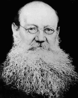

From Mutual Aid, A Factor of Evolution, by
P Kropotkin, 1904, William Heinemann, London
Many stems had no force to resist disintegration; they broke up and were lost for history. But the more vigorous ones did not disintegrate. They came out of the ordeal with a new organization - the village community - which kept them together for the next fifteen centuries or more. The conception of a common territory, appropriated or protected by common efforts, was elaborated, and it took the place of the vanishing conceptions of common descent. The common gods gradually lost their character of ancestors and were endowed with a local or territorial character. They became the gods or saints of a given locality; "the land" was identified with its inhabitants … (120)
A very long evolution was required before the gentes, or clans, recognized the separate existence of a patriarchal family in a separate hut; but even after that had been recognized, the clan, as a rule, knew no personal inheritance of property. The few things which might have belonged personally to the individual were either destroyed on his grave or buried with him. The village community, on the contrary, fully recognized the private accumulation of wealth within the family and its hereditary transmission. But wealth was conceived exclusively in the shape of movable property, including cattle, implements, arms, and the dwelling-house which "like all things that can be destroyed by fire" - belonged to the same category. As to private property in land, the village community did not, and could not, recognize anything of the kind, and, as a rule, it does not recognize it now. The land was the common property of the tribe, or of the whole stem, and the village community itself owned its part of the tribal territory so long only as the tribe did not claim a re-distribution of the village allotments. (12ouse which "like all things that can be destroyed by fire" - belonged to the same category. As to private property in land, the village community did not, and could not, recognize anything of the kind, and, as a rule, it does not recognize it now. The land was the common property of the tribe, or of the whole stem, and the village community itself owned its part of the tribal territory so long only as the tribe did not claim a re-distribution of the village allotments. (124, 125)
A whole series of institutions, partly inherited from the clan period, have developed from that basis of common ownership of land during the long succession of centuries which was required to bring the barbarians under the dominion of States organized upon the Roman or Byzantine pattern. The village community was not only a union for guaranteeing to each one his fair share in the common land, but also a union for common culture, for mutual support in all possible forms, for protection from violence, and for a further development of knowledge, national bonds, and moral conceptions; and every change in the judicial, military, education or economic manners had to be decided at the folkmotes in the village, the tribe, or the confederation. The community being a continuation of the gens, it inherited all its functions. It was the universitas, the mir - a world in itself.
Common hunting, common fishing, and common culture of the orchards or the plantations of fruit trees was the rule with the old gentes. Common agriculture became the rule in the barbarian village communities. True, that direct testimony to this effect is scarce, and in the literature of antiquity we only have the passages of Diodorus and Julius Caesar relating to the inhabitants of the Lipari Islands, one of the Celt-Iberian tribes, and the Sueves. But there is no lack of evidence to prove that common agriculture was practiced among some Teuton tribes, the Franks, and the old Scotch, Irish and Welsh. (126)
… Moreover, it is well known that many tribes of Brazil, Central America, and Mexico used to cultivate their fields in common, and that the same habit is widely spread among some Malayans, in New Caledonia, which several Negro stems, and so on. In short, communal culture is so habitual with many Aryan, Ural-Altayan, Mongolian, Negro, Red Indian, Malayan, and Melanesian stems that we must consider it as a universal - though not as the only possible - form of primitive agriculture. (127)
Sociability and need of mutual aid and support are such inherent parts of human nature that at no time of history can we discover men living in small isolated families, fighting each other for the means of subsistence. On the contrary, modern research … proves that since the very beginning of their prehistoric life men used to agglomerate into gentes, clans, or tribes, maintained by an idea of common descent and by worship of common ancestors. It has deeply impressed all subsequent development of mankind; and when the bonds of common descent had been loosened by migrations on a grand scale, while the development of the separated family within the clan itself had destroyed the old unity of the clan, a new form of union, territorial in its principle - the village community - was called into existence by the social genius of man. (133, 134)
… In olden times, when a king sent his vogt to a village, the peasants received him with flowers in one hand and arms in the other, and asked him - which law he intended to apply: the one he found in the village, or the one he brought with him? And, in the first case, they handed him the flowers and accepted him; while in the second case they fought him. Now, they accepted the king's or the lord's official whom they could not refuse; but they maintained the folkmote's jurisdiction, and themselves nominated six, seven, or twelve judges, who acted as arbiters and sentence-finders. In most cases the official had nothing left to him but to confirm the sentence and to levy the customary fred. This meant self-administration and self-legislation, had been maintained through all the struggles; and even the lawyers by whom Karl the Great was surrounded could not abolish it; they were bound to confirm it. At the same time, in all matters concerning the community's domain, the folkmote retained its supremacy and (as shown by Maurer) often claimed submission from the lord himself in land tenure matters. No growth of feudalism could break this resistance; the village community kept its ground; and when, in the ninth and tenth centuries, the invasions of the Normans, the Arabs, and the Ugrians had demonstrated that military scholoe were of little value for protecting the land, a general movement began all over Europe for fortifying the villages with stone walls and citadels. Thousands of fortified centres where then built by the energies of the village communities and, once they had built their walls, once a common interest had been created in this new sanctuary - the town walls - they soon understood that they could henceforward resist the encroachments of the inner enemies, the lords, as well as the invasions of foreigners. A new life of freedom began to develop within the fortified enclosures. The medieval city was born. (164, 165)
The whole process of liberation progressed by a series of imperceptible acts of devotion to the common cause, accomplished by men who came out of the masses - by unknown heroes whose very names have not been preserved by history. The wonderful movement of the God's peace (treuga Dei) by which the popular masses endeavoured to put a limit to the endless family feuds of the noble families, was born in the young towns, the bishops and the citizens trying to extend to the nobles the peace they had established within their own town walls … (167)
… In fact, the intellectual movement which has been described as the Twelfth Century Renaissance and the Twelfth Century Rationalism - the precursor of the Reform - date from that period, when most cities were still simple agglomerations of small village communities enclosed by walls. (169)
However, another element, besides the village community principle, was required to give to these growing centres of liberty and enlightenment the unity of thought and action, and the powers of initiative, which made their force in the twelfth and thirteenth centuries. With the growing diversity of occupations, crafts and arts, and with the growing commerce in distant lands, some new form of union was required, and this necessary new element was supplied by the guilds. … (169)
… The city organized itself as a federation of both small village communities and guilds. (177)
The craft guild was then a common seller of its produce and a common buyer of the raw materials, and its members were merchants and manual workers at the same time. Therefore, the predominance taken by the old craft guilds from the very beginnings of the free city life guaranteed to manual labour the high position which it afterwards occupied in the city. In fact, in a medieval city manual labour in a "mystery" was considered as a pious duty towards the citizens; a public function as honourable as any other. An idea of "justice" to the community, of "right" towards both producer and consumer, which would seem so extravagant now, penetrated production and exchange … (191)
A difference between master and apprentice, or between master and worker …, existed in the medieval cities from their very beginnings; but this was at the outset a mere difference of age and skill, not of wealth and power. After a seven years' apprenticeship, and after having proved his knowledge and capacities by a work of art, the apprentice became a master himself. And only much later, in the sixteenth century, after the royal power had destroyed the city and the craft organization, was it possible to become master in virtue of simple inheritance or wealth. But this was also the time of a general decay in medieval industries and art. (193)
The craft organization required, of course, a close supervision of the craftsmen by the guild, and special jurates were always nominated for that purpose. But it is most remarkable that, so long as the cities lived their free life, no complaints were heard about the supervision; while, after the State had stepped in, confiscating the property of the guilds and destroying thei independence in favour of its own bureaucracy, the complaints became simply countless. On the other hand, the immensity of progress realized in all arts under the medieval guild system is the best proof that the system was no hindrance to individual initiative. … (196, 197)
… The burgher could not understand that equal rights of citizenship might be granted to the peasant upon whose food supplies he had to rely, and a deep rent was traced between town and village. In some cases the peasants simply changed owners, the city buying out the patron's rights and selling them in shares to her own citizens. Serfdom was maintained, and only much later on, towards the end of the thirteenth century, it was the craft revolution which undertook to put an end to it, and abolished personal servitude, but dispossessed at the same time the serfs of the land. It hardly need to be added that the fatal results of such policy were soon felt by the cities themselves; the country became the city's enemy. (203)
… Towards the end of the fifteenth century, mighty States, reconstructed on the old Roman pattern, were already coming into existence. In each country and each region some feudal lord, more cunning, more given to hoarding, and often less scrupulous than his neighbors, had succeeded in appropriating to himself richer personal domains, more peasants on his lands, more knights in his following, more treasures in his chest. He had chosen for his seat a group of happily-situated villages, not yet trained into free municipal life - Paris, Madrid or Moscow - and with the labor of his serfs he had made of them royal fortified cities, whereto he attracted war companions by a free distribution of villages, and merchants by the protection he offered to trade. The germ of a future State, which began gradually to absorb other similar centres, was thus laid. Lawyers, versed in the study of Roman law, flocked into such centres; a tenacious and ambitious race of men issued from among the burgesses, who equally hated the haughtiness of the lords and what they called the lawlessness of the peasants. The very forms of the village community, unknown to their code, the very principles of federalism were repulsive to them as "barbarian" inheritances. Caesarism, supported by the fiction of popular consent and by the force of arms, was their ideal, and they worked hard for those who promised to realise it. (216)
The Christian Church, once a rebel against Roman law and now its ally, worked in the same direction. The attempt at constituting the theocratic Empire of Europe having proved a failure, the more intelligent and ambitious bishops now yielded support to those whom they reckoned upon for reconstituting the power of the Kings of Israel or of the Emperors of Constantinople. The Church bestowed upon their rising rulers her sanctity, she crowned them as God's representatives on earth, she brought to their service the learning and the statesmanship of her ministers, her blessings and maledictions, her riches, and the sympathies she had retained among the poor. The peasants, whom the cities had failed or refused to free, on seeing the burghers impotent to put an end to the interminable wars between the knights - which wars, they had so dearly to pay for - now set their hopes upon the King, the Emperor, or the Great Prince; and while aiding them to crush down the mighty feudal owners, they aided them to constitute the centralized state. … Mighty states made their appearance; and the cities had now to resist not only loose federations of lords, but strongly-organized centres, which had armies of serfs at their disposal. (217)
The worst was, that the growing autocracies found support in the divisions which had grown within the cities themselves. The fundamental idea of the medieval city was grand, but it was not wide enough. Mutual aid and support cannot be limited to a small association; they must spread to its surroundings, or else the surroundings will absorb the association. … Instead of looking upon the peasants and artisans who gathered under the protection of his walls as upon so many aids who would contribute their part to the making of the city - as they really did - a sharp division was traced between the "families" of old burghers and the newcomers. For the former, all benefits from communal trade and communal lands were reserved, and nothing was left for the latter but the right of freely using the skill of their own hands. The city thus became divided into "the burghers" or "the commonality", and "the inhabitants". … (218)
The same division took place between the city proper and the surrounding villages. The commune had well tried to free the peasants, but her wars against the lords became, as already mentioned, wars for freeing the city itself from the lords, rather than for freeing the peasants. She left to the lord his rights over the villeins, on condition that he would molest the city no more and would become co-burgher. But the nobles "adopted" by the city, and now residing within its walls, simply carried on the old war within the very precincts of the city. They disliked to submit to a tribunal of simple artisans and merchants, and fought their old feuds in the streets. … Drawing large incomes from the estates they had still retained, they surrounded themselves with numerous clients and feudalized the customs and habits of the city itself. And when discontent began to be felt in the artisan classes of the town, they offered their sword and their followers to settle the differences by a free fight, instead of letting the discontent find out the channels which it did not fail to secure itself in olden times. (218, 219)
The greatest and most fatal error of most cities was to base their wealth on commerce and industry, to the neglect of agriculture. They thus repeated the error which had once been committed by the cities of antique Greece, and they fell through it into the same crimes. The estrangement of so many cities from the land necessarily drew them into a policy hostile to the land, which became more and more evident in the time of Edward the Third, the French Jacqueries, the Hussite wars, and the Peasant War in Germany. On the other hand, a commercial policy involved them in distant enterprises. Colonies were founded by the Italians in the southeast, by German cities in the east, by Slavonian cities in the far northeast. Mercenary armies began to be kept for colonial wars, and soon for local defense as well. Loans were contracted to such an extent as to totally demoralize the citizens, and internal contests grew worse at each election, during which the colonial politics in the interests of a few families was at stake. The division into rich and poor grew deeper, and in the sixteenth century, in each city, the royal authority found ready allies and support among the poor. (219, 220)
The students of Roman law and the prelates of the church, closely bound together since the time of Innocent the Third, had succeeded in paralyzing the idea - the antique Greek idea - which presided at the foundation of the cities. For two- or three-hundred years they taught from the pulpit, the University chair, and the judges' bench, that salvation must be sought for in a strongly centralized state, placed under a semi-divine authority; that one man can and must be the saviour of society, and that in the name of public salvation he can commit any violence; burn men and women at the stake, make them perish under indescribable tortures, plunge whole provinces into the most abject misery … (220, 221)
However, before submitting for three centuries to come, to the all-absorbing authority of the State, the masses of the people made a formidable attempt at reconstructing society on the old basis of mutual aid and support. It is well known by this time that the great movement of the reform was not a mere revolt against the abuses of the Catholic Church. It had its constructive ideal as well, and that ideal was life in free, brotherly communities. Those of the early writings and sermons of the period which found most response with the masses were imbued with ideas of the economical and social brotherhood of mankind. The "Twelve Articles" and similar professions of faith, which were circulated among the German and Swiss peasants and artisans, maintained not only every one's right to interpret the Bible according to his own understanding, but also included the demand of communal lands being restored to the village communities and feudal servitudes being abolished, and they always alluded to the "true" faith - a faith of brotherhood. At the same time scores of thousands of men and women joined the communist fraternities of Moravia, giving them all their fortune and living in numerous and prosperous settlements constructed upon the principles of communism. Only wholesale massacres by the thousand could put a stop to this widely-spread popular movement, and it was by the sword, the fire, and the rack that the young States secured their first and decisive victory over the masses of the people. (224, 225)
For the next three centuries the States, both on the Continent and in these islands, systematically weeded out all institutions in which the mutual-aid tendency had formerly found its expression. The village communities were bereft of their folkmotes, their courts and independent administration; their lands were confiscated The guilds were spoliated of their possessions and liberties, and placed under the control, the fancy, and the bribery of the State's official. The cities were divested of their sovereignty, and the very springs of their inner life - the folkmote, the elected justices and administration, the sovereign parish and the sovereign guild - were annihilated; the State's functionary took possession of very link of what formerly was an organic whole. … The State alone, and the State's church, must represent loose aggregations of individuals, connected by no particular bonds, bound to appeal to the Government each time that they fell a common need. … (226, 227)
The absorption of all social functions by the State necessarily favoured the development of an unbridled, narrow-minded individualism. In proportion as the obligations toward the State grew in numbers the citizens were evidently relieved from their obligations towards each other. In the guild - and in medieval times every man belonged to some guild or fraternity - two "brothers" were bound to watch by turns a brother who had fallen ill; it would be sufficient now to give one's neighbor the address of the next paupers' hospital. In barbarian society, to assist at a fight between two men, arisen from a quarrel, and not to prevent it from taking a fatal issue, meant to be oneself treated as a murderer; but under the theory of the all-protecting State the bystander need not intrude; it is the policeman's business to interfere, or not. And while in a savage land, among the Hottentots, it would be scandalous to eat without having loudly called out thrice whether there is not somebody wanting to share the food, all that a respectable citizen has to do now is to pay the poor tax and to let the starving starve. The result is, that the theory which maintains that men can, and must, seek their own happiness in a disregard of other people's wants is now triumphant all around - in law, in science, in religion. It is the religion of the day, and to doubt of its efficacy is to be a dangerous Utopian. … (227, 228)